Basic Static and Dynamic Analysis (Part 2)
So Far we have discussed attacker methodologies. Writing a malware to disk and executing is a great step for the threat actor but it does not guarantee continued control of the host. That's why threat actors need persistence - a way to guarantee that the malware will be executed each time target is restarted.
Persistance mechanisms
Run Keys
Before we understand what is Run keys we have to know what is Windows Registry.
Windows Registry is a hierarchical database that stores the low level configuaration settings for OS, Applications, and Hardware.
Imagine a gaint filing cabinet for your computer. Just like how we keep importent documents in the cabinet organized Registry stores all the behind-the-scenes config.
Key Components of Windows registry:
- Hives: Major Section like
HKEY_LOCAL_MACHINE(system-wide setting) orHKEY_CURRENT_USER(user-specific preferences). - Keys: Keys are like folders within the hives. They can nest into subkeys(subfolders) example -
HKEY_CURRENT_USER\Software\Microsoft\Windows - Values: Values are the actual data entries stored. It has three parts Name, Type and Data.
Now, we know that what is Windows Registry we can continue on Runkeys. Windows Registry houses per user and per machine keys that can store file path values of binaries to run upon login or startup.
The keys are as follows:
- `HKEY_LOCAL_MACHINE\Software\Microsoft\Windows\CurrentV
ersion\Run`
- `HKEY_CURRENT_USER\Software\Microsoft\Windows\CurrentVer
sion\Run`
- `HKEY_LOCAL_MACHINE\Software\Microsoft\Windows\CurrentV
ersion\RunOnce`
- `HKEY_CURRENT_USER\Software\Microsoft\Windows\CurrentVer
sion\RunOnce`
These registry keys run a program when a user logs on. The Run key makes the program run everytime while the RunOnce key makes the program run one time and then the key is deleted so this is the reason why threat actors prefer Run keys over the RunOnce keys. Another thing HKEY_LOCAL_MACHINE(HKLM) are system or machine level keys which runs for every user on the system and HKEY_CURRENT_USER(HKCU) are user level keys that runs for a single user.
Format to add values to this keys is description-string=commandline. description-string: A label or name for the entry. commandline: This is the full path to the executable along with any arguments. You can add multiple entries to this keys.
If you want to read more the Run and RunOnce keys. Here's the Microsoft Official Document
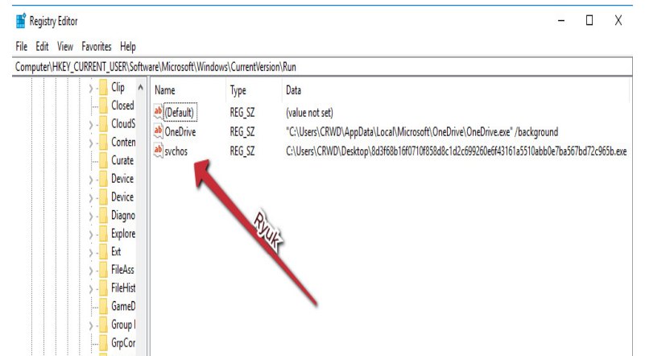
Scheduled tasks
Windows offers task scheduling by default,
which is achieved by schtasks.exe a command-line utility that enables the admins to create, delete, run and end scheduled tasks.
This benifts threats actors as it ensures that software not only starts on boot or login but any given time interval.
Now lets see a example:- C:\Windows\system32\schtasks.exe /Create /RU NT AUTHORITY\SYSTEM /tn ayttpnzc /tr regsvr32.exe -s "c:\path\to\malware.dll" /SC ONCE /Z /ST 15:21 /ET 15:33
First we are creating a new scheduled task using /Create next we have /RU which stands for "Run As User" in that we are using NT AUTHORITY\SYSTEM (built-in system account with highest previleges on a windows machine), /tn it specifies the task name, /tr Defines the program or script to run, here regsvr32.exe a system utility for registring and unregistering DLLs and ActiveX controls in the Windows Registry and we are trying to register a malicious dll with -s switch for regsvr32.exe which makes sure registration process runs without any user interface or messages, /SC sets the schedule type e.g., ONCE, DAILY OR MINUTE, with modifiers like /ST for start time and /ET for end time.
As malware analyst, we can query scheduled tasks with the following command line:
schtasks /query /fo list /v
This will return a full list of scheduled tasks and their corresponding binary. We should always be suspicious of scheduled tasks with a UUID-style or high-entropy name.
Malicious shortscuts and start up folders
Another method that can befuddle malware analysts is the placement of malicious LNK files(LNK files are nothing but shortcut files that acts as pointers to the other files, folder or applications) on windows.
These rely on social engineering skills to make user double-click the shortcut while posing as a link to a legitimate file, or will be placed in a directory where they will run automatically, such as C:\Users\$username\AppData\Roaming\Microsoft\Windows\Start Menu\Programs\Startup\.
In instances where this directory is used, the file need not be a shortcut, and the malicious binary itself may also simply be placed in this directory and will execute upon startup.
You might be wondering the difference between the run keys and startup folders. While the startup folders provides a simple way to maintain persistence it's prone to easily detectable so, threat actors often choose registry method for it's stealth.
Services
Malware often tries to impersonates as legitimate service as services can automatically start and are a very reliable way of ensuring the persistence of adverarial software.
Malware uses APIs like CreateService() or command-line tools like sc.exe to install services.
We can easily check services via PowerShell to ascertain names and execution paths with a command such as the following:
`Get-WmiObject win32_service | select Name, DisplayName,
@{Name='Path'; Expression={$_.PathName.split('"')[1]}} | FormatList`
The first part Get-WmiObject win32_service queries Windows Management Instrumentation(WMI) to get objects representing all the services on the system from the win32_service class. Next up we are selcting properties such as Name(It's a internal identifier of the system such as Windows Update service would be wuauserv) and DisplayName(Full name/User Friendly of the Service). Now defining a calculated property(allows you to create a new property on the fly based on the existing data). @{} this is hashtable literal basically hashtable contains key-value pairs. In the hashtable we have $_.PathName contains the current objects full command line which used to start the service then we are splitting the string at every double quote resulting in a array. From we are selecting the second element which often the actual executable path. Lastly, FormatList arranges each service’s properties in a vertical list.
This will return a list of all services on the system, allowing an analyst to inspect each one. Furthermore, a service installation will generate event log entries with ID 7045, which can be located with the following PowerShell:
`Get-WinEvent -FilterHashtable @{logname='system'; id=7045} |
format-list`
Get-WinEvent is a cmdlet fetches events from Windows event logs. It’s a powerful tool for querying logs like the system, application, or security logs. -FilterHashtable is a parameter allows you to specify filtering criteria using a hashtable. Now using logname="system" we searching in system event log for the events with the ID 7045.
Tools
- Autoruns from sysinternals
A powerful tool which not only covers the basic persistence method but also more advanced once. Using autoruns we can quickly enable and disable the task that are created by registry, scheduled task and more.
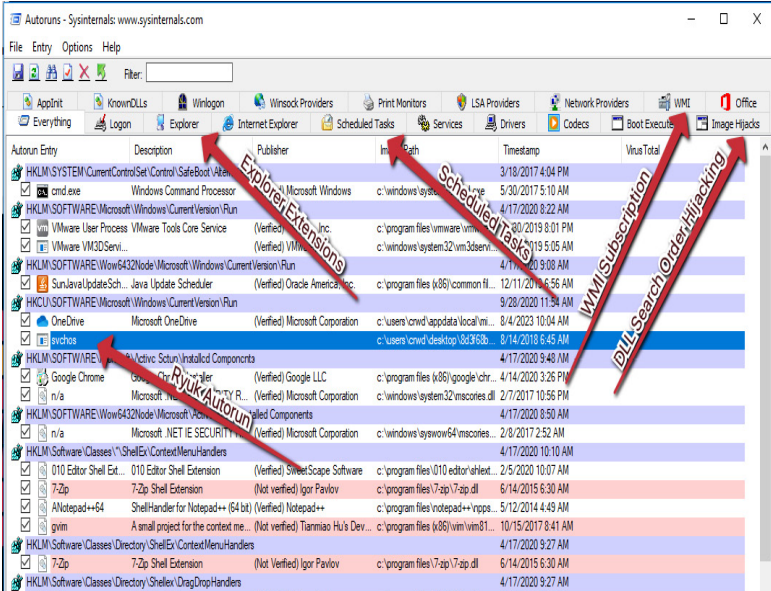
- PersistenceSniper
A PowerShell module designed to hunt for persistence mechanisms in Windows Machines
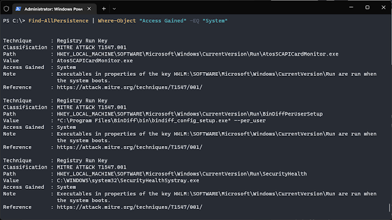
- Process Hacker
While primarily used for process management, it can help identify new processes created by malware and their persistence methods by inspecting memory and disk activity.
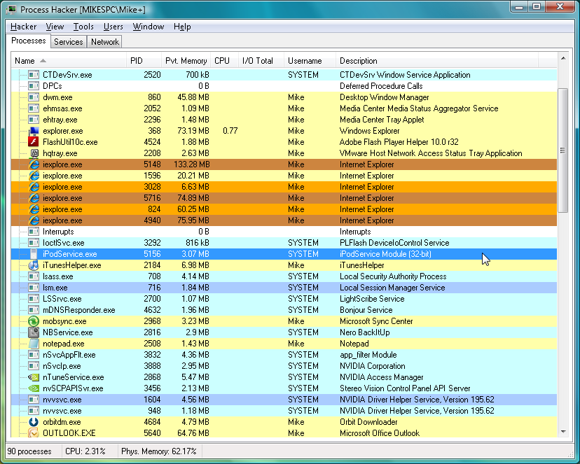
For more tools and information on persistence check out this github repo
Triage
Now, The first and foremost question is what is triage: The initial assessment of a potencially malicious file, process or event to identify it's severity, impact and how much attention it requires. The goal of the triage is to quickly identify threats then classify and prioritize responses and decide the further steps.
To identify the or measure the impact we can answer few questions:
- What files were written to the system?
- What persistence mechanisms exist, if any?
- What was the initial vector responsible for infection?
- What are the roles of the artifacts we've identified as a result of
answering the other questions?
As we all know, time is of the essence in a security incident so we can make scripts for initial analysis and triage. We will now takle the persistence mechanisms that we have seen till now.
Registry keys
As we have seen four primary keys - two system bound which are readable by any user of the machine and two user bound which applies to only currently logged in user.
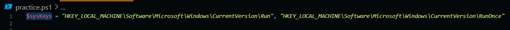
As you can see we have created a array storing our two system keys. Now loop over the our keys using a for and n utilizing Get-ItemProperty to return the value of registry keys.
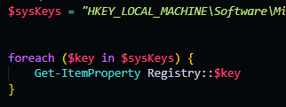
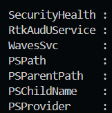
This will allow us to fetch the values of the keys much better and faster way than using regedit.exe
Now a slightly trickier task of dealing with user-based registry keys. We want to check every user's key not just currently logged in one so, that's why we won't be able use the HKEY_CURRENT_USER. In windows, each user is assigned an SID(Security Identifier) within registry. SID has the format:
S-Revision-Authority-Identifier-SubAuthority(n)
- Revision: This number specifies the version of the SID structure. Windows always uses 1
- Identifier Authority: Top-level entity that issues SIDs. 5 represents NT authority.
You might be wondering the difference between the Authority and Sub-Authorities so here the analogy think SIDs like number then authority would be country code and sub-authorities would be phone number. Sub-authorities uniquely identifies a specific person or group within that category.
Some well known SIDs would be:
S-1-5-18: LOCAL_SYSTEM (system-level privileges).S-1-5-19: LOCAL_SERVICE (limited service account).S-1-5-20: NETWORK_SERVICE (network-facing service account).
Another thing to note is that these SIDs are fixed and hardcoded so they do have the predefined structure. so having a SID like this S-1-5-18-20 would be invalid.
Now with this information, we will create array of user profiles and their corresponding user directories and SIDs. We can use a powerful WMI(Windows Management Instrumentation) framework. WMI is a management framework in Windows that allows administrators and software to query, monitor, and control system resources (hardware, software, and network devices).
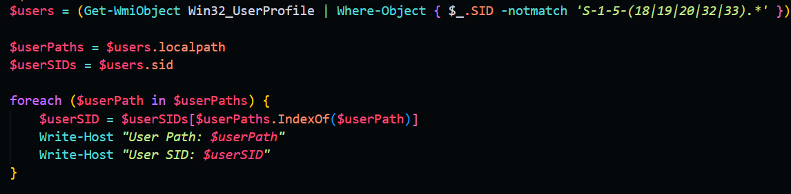
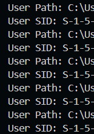
In the above code snippet, we get each user profile previously outlined reserved SIDs and load into a user array. Then we load each user's path in and SID into the userPaths and userSIDs arrays.
Now lastly we have to loop over each user in a loop and load their registry hives, then read their keys:
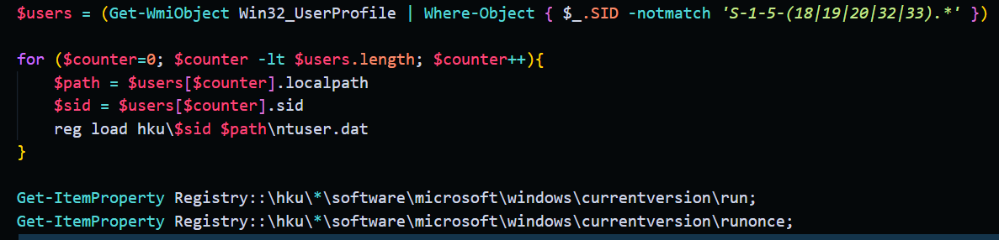
Now using a for loop we go over each user. we have initialized a counter variable equal to 0 then condition is that we will run this loop till counter value is less than the length of users array basically number of users and finally increamenting the counter each time the loop completes.
In each loop, we load the object(be it path or SID) into the corresponding variable based on the value of the counter. With the help of counter we are basically getting each user one by one so if counter is 0 we are getting first element of the users array, user[0]. From there we are load the registry hive. basically reg load temporarily loads a registry file into memory so we can access it's content then hku/$sid where to mount this file the registry and lastly $path\ntuser.dat is the location of the file being loaded. ntuser.dat is a hidden file that stores all of the user's personal registry settings.
Once loaded, we query each user's registry keys, utilizing the same method we utilized before for the system bound keys.
Service installation
A semi-common methodology of achieving persistence is the installation of a Windows service. This method is leveraged by several threat actors – most notably TrickBot, which sometimes installs upward of 10 services to achieve persistence.
Checking for quite simple. We will use the Get-WMIObject command that we have already utilized so far.
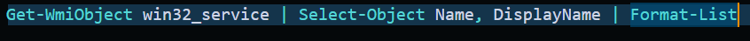
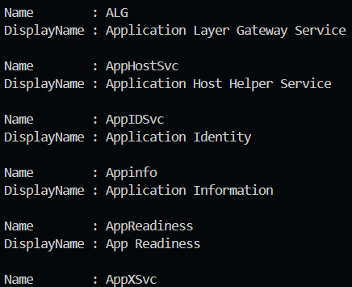
Scheduled Tasks
Another command persistence methodology scheduled tasks where tasks run on a standard schedule set at task creation time, and can perform any number of actions, including simply executing a binary.
We know that created tasks are also stored as simple XML files in C:\Windows\System32\Tasks. We'll begin by loading each XML file into an array utilizing Get-ChildItem, and ensuring that we recurse to check subfolders as well.
Once the item has been load into an array, we can iterate over it and pull out the relevant info. here we will try to get the specific binary called by each task and they are surrounded by
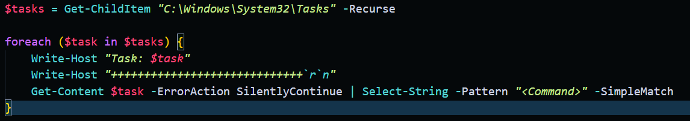
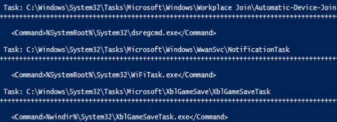
Other less Common ways of persistence
WMI subscriptions
WMI subscriptions are fairly simple ways of achieving persistence that can execute arbitrary binaries via the same WMI framework we've previously made use of to check other persistence mechanisms.
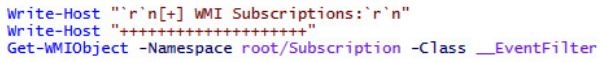
Start up folders
This persistence methodology has become less common as time has worn on, although it can still be found being used on a semi-frequent basis.
The folders for all users live in a single location, so we can utilize a wildcard to check for these, being sure to exclude the common desktop.ini file. If results are found, they'll likely be in the form of a shortcut – an lnk file, referencing a binary or command elsewhere on the system.
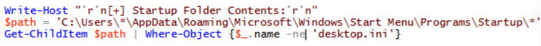
Examining NTFS (NT File System) alternate data streams
Sometimes, threat actors will write the file containing malicious code of a non-zero but when you examine the contents of the file, either it will gibberish padding or entirely blank
Here comes the NTFS which is a predominant file system for Windows operating systems. A key feature is that it supports multiple data streams within a single file where primary data stream contains the main data while the alternate data streams attached to the file are not displayed in standard file listing and only accessible through the specific commands or tools.
let see a example:
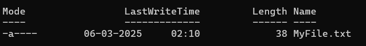
I have created a .txt file containing a string AnyDataIWant.
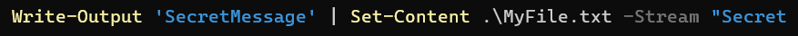
Now we are creating a alternative data stream which stores the message Secret.
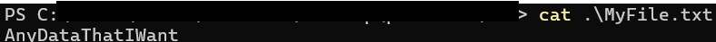
so, we can see that if try to print the content of the MyFile.txt it does not show the secret message.
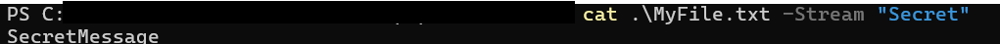
So from the examples we can conclude that the primary stream is unnamed and that's why it is often reffered as the unnamed data stream, with ADS being named streams.
I gave rather too simple example but let's see how threat actor use it to their advantage. ALPHA SPIDER is the adversary behind the development and operation of the Alphv ransomware as a service (Raas).
Here, the threat actor deployed reverse-shh executable in C:\System and then they hid it in "ADS" (Alternate Data Stream) in the root directory of the C drive. They named it "Host Process for Windows Service" to make it look legitimate then created a malicious service to ensure persistence for their reverse-ssh tool before deleting the executable from the initial location.
They is interesting cause the as many tools — including the system dir command and common PowerShell cmdlets — would not show an ADS on the root volume, even though these commands would display ADSs on other files and directories.
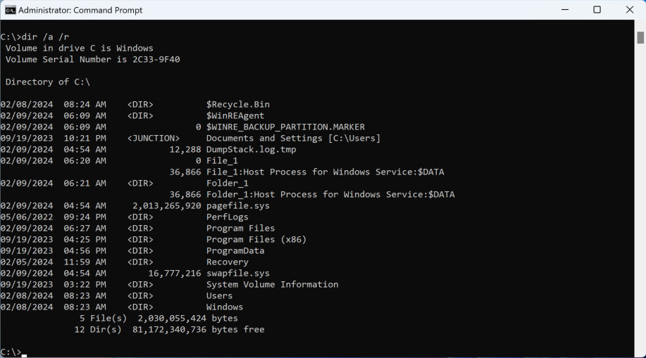
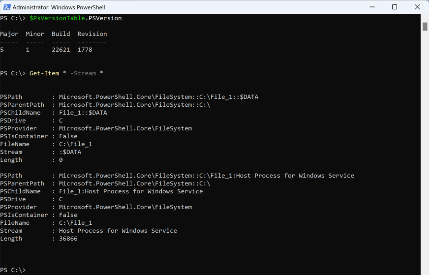
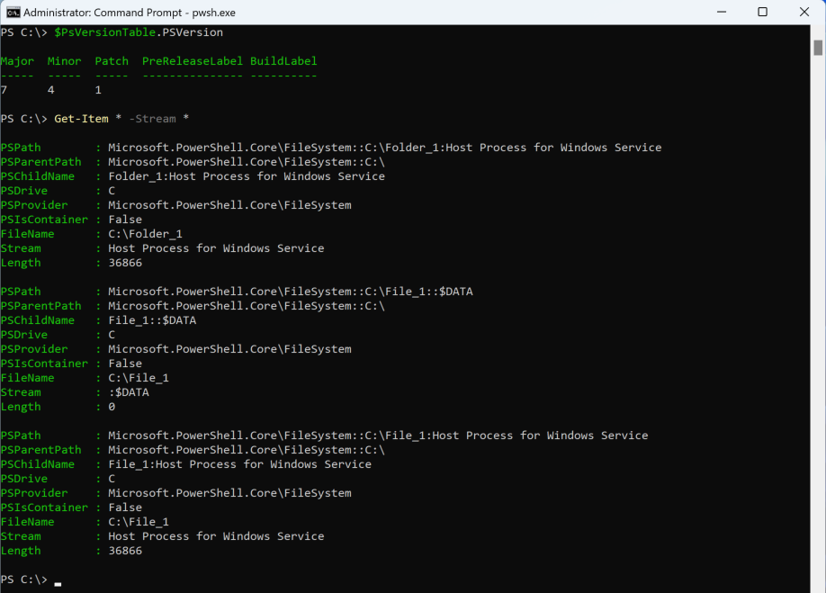
Citations
- To Read more on ALPHA SPIDER
- How NTFS Alternate Data Streams Introduce Security Vulnerability
- Windows ::DATA Alternate Data Stream
- Collection of malware persistence information
- 11 Best Malware Analysis Tools and Their Features
- Microsoft Official Document on Run and RunOnce Keys
- Malware Analysis Techniques Book by Dylan Barker